Building RC Airplanes
I used to build scale RC planes from balsa wood kits in high school. Some of the models used gas and nitro engines along with servos for controlling aero surfaces.
Model Airways Nieuport 28
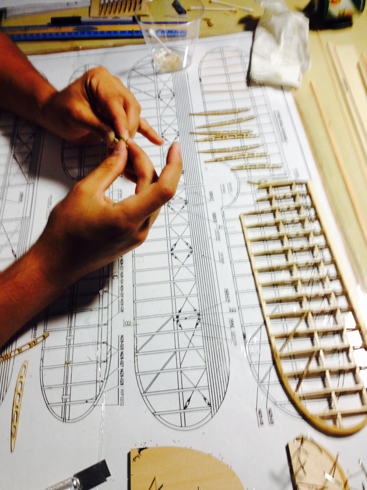


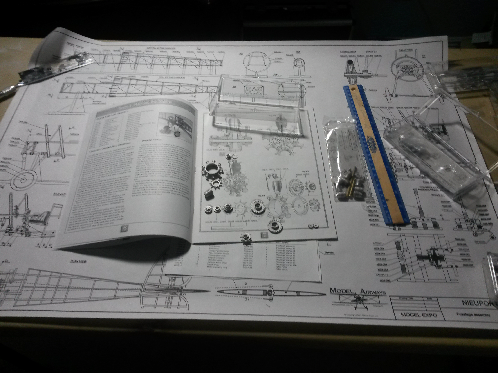
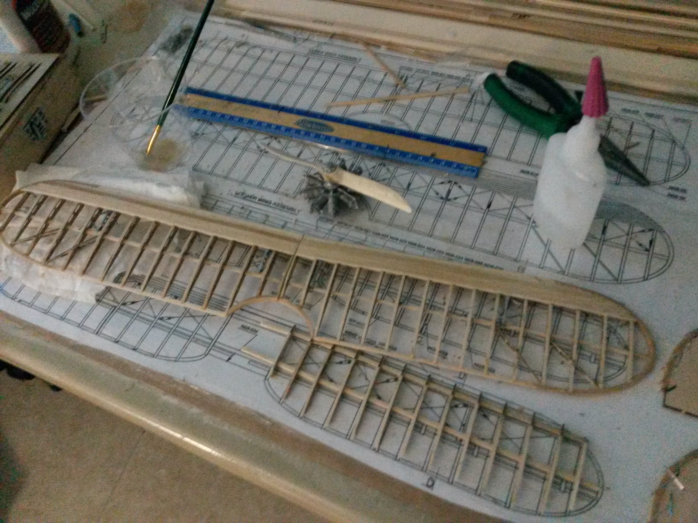
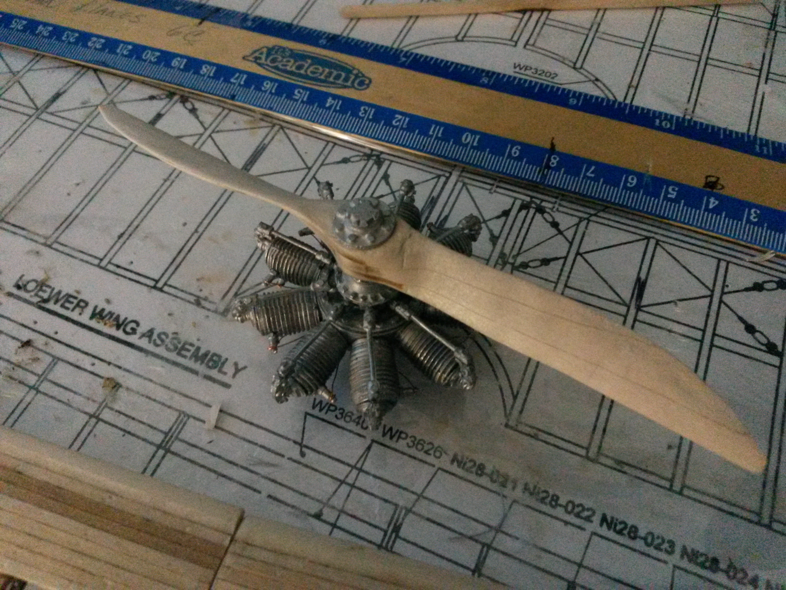
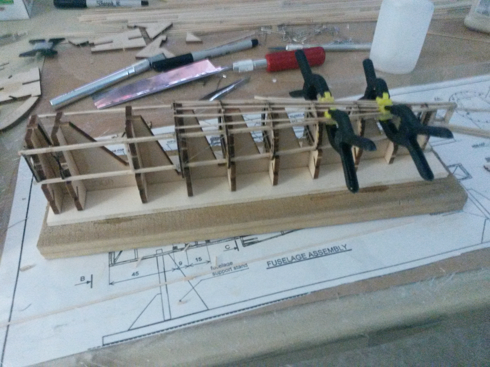
Piper J-3 Cub (1/4 Scale — Balsa USA)
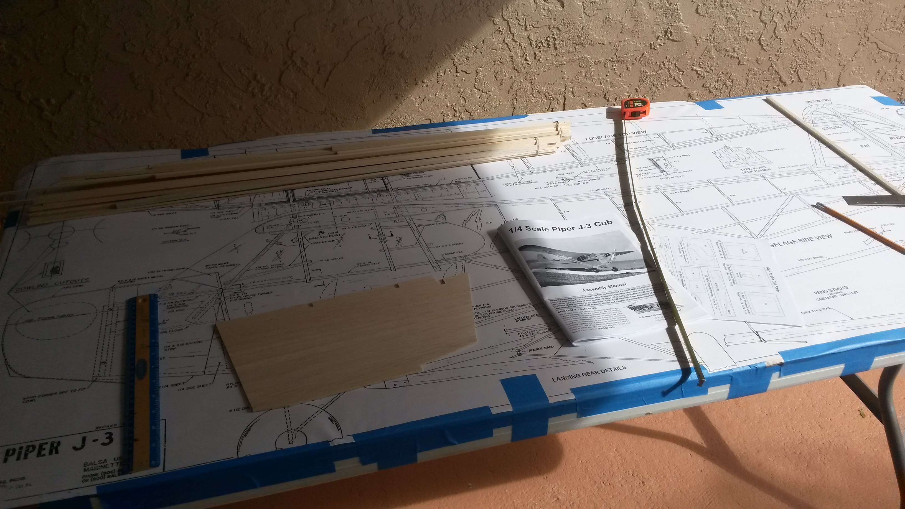
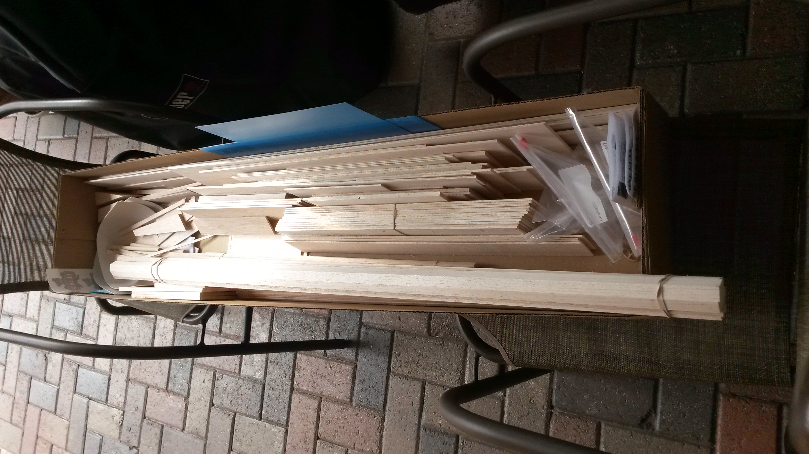
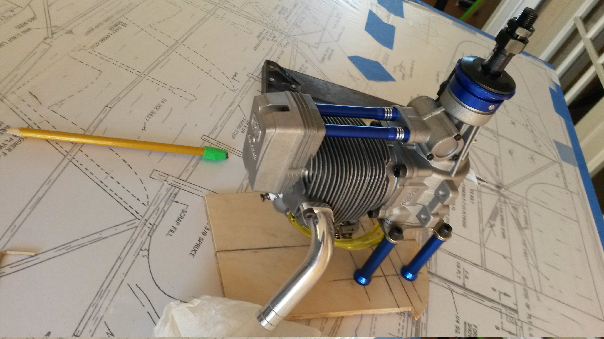
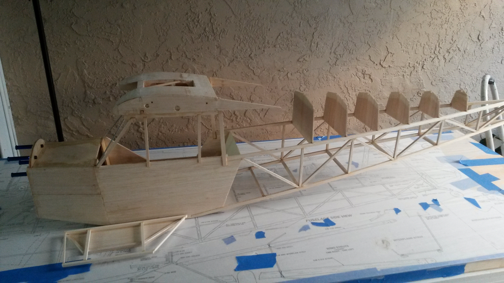

P-51 Mustang

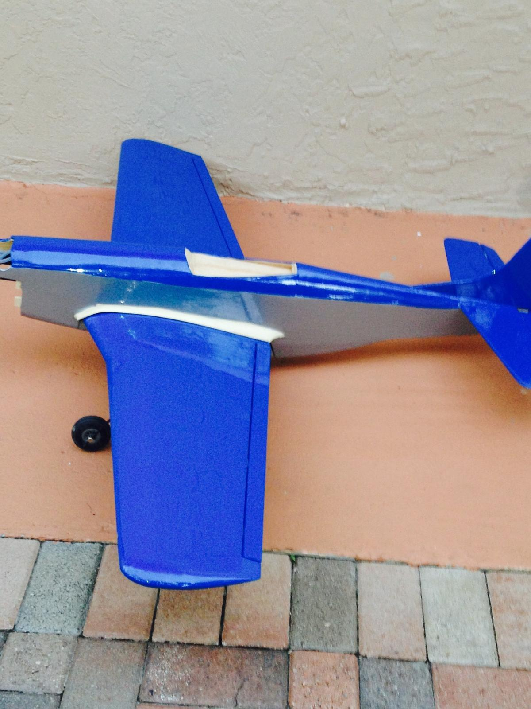
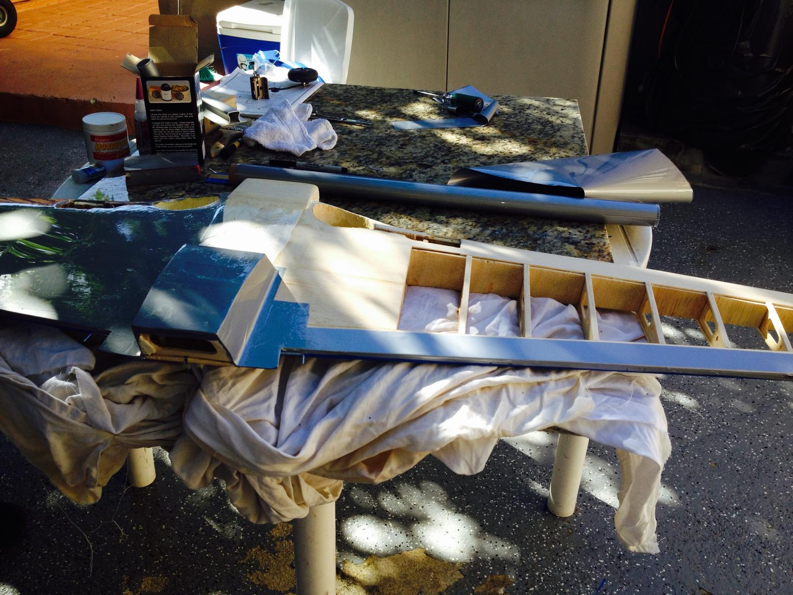